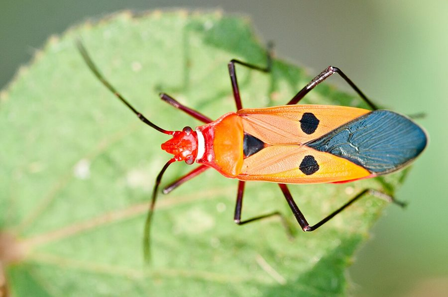

लाल कपास कीड़ाRed Cotton Bug
Dysdercus cingulatus · Pyrrhocoridae · INS-0001

- Scientific name
- Dysdercus cingulatus (Fabricius, 1775)
- Family
- Pyrrhocoridae
- Hindi
- लाल कपास कीड़ा
- Status here
- native
- IUCN
- not evaluated
When to look कब देखें
Expected mainly in March, April, May, June, July, August, September, October, November.
लाल कपास कीड़ा / Red Cotton Bug
Dysdercus cingulatus (Fabricius, 1775) — Pyrrhocoridae
लाल कपास कीड़ा — कपास और भिंडी के खेतों का वह चमकदार लाल-नारंगी कीड़ा जो झुंड बनाकर फलियों और बीजों का रस चूसता है। लाल-नारंगी बदन पर काले त्रिकोणीय धब्बे — किसान तुरंत पहचानते हैं। एक ही पौधे पर बड़े कीड़े और छोटे शिशु (निम्फ) एक साथ मिलते हैं। आक (Calotropis, FLR-0002) पर साल भर पनाह लेता है — वहीं से यह कपास के खेत में फैलता है। किसान इसे कीट मानते हैं, और है भी — पर यह पक्षियों, मकड़ियों और छिपकलियों का भोजन भी है। इसके चेतावनी-लाल रंग का रहस्य गाँव में अभी तक किसी ने पूरी तरह नहीं जाँचा।
Quick Identification त्वरित पहचान
| Feature | Description |
|---|---|
| Size | 14–18 mm; elongated, capsule-shaped body |
| Colour | Bright red-orange body with black triangular markings; black head and legs |
| Nymphs | Bright red, wingless; all 5 instars distinctly red — look like small adults |
| Aggregation | Found in groups — adults and nymphs together on the same plant |
| Movement | Slow-moving; does not fly readily when disturbed |
| Host plants | Cotton, okra, hibiscus, Calotropis — always on Malvaceae or Apocynaceae |
Field tip: If the red bug is on cotton or okra and over 14 mm, it is almost certainly D. cingulatus. If smaller (10–12 mm) with a white band across the back, it may be D. koenigii — both can occur together on the same plant.
Morphology आकारिकी
| Measurement | Range |
|---|---|
| Body length (adult) | 12–18 mm |
| Wingspan | 22–30 mm |
| Forewing length | 10–15 mm |
Head: Black, with a long slender piercing-sucking mouthpart (proboscis) tucked beneath the body when resting.
Thorax: Red-orange with black markings. Forewings (hemelytra) reddish, overlapping at rest.
Abdomen: Red with black spots arranged symmetrically; underside pale.
Legs: Black, slender.
Antennae: Black, 4-segmented, about half body length.
Nymphs: Bright red, wingless, smaller versions of the adult through 5 instars. Even the first instar is distinctly red. Wing pads appear only in the fourth and fifth instars.
Size: Adult 14–18 mm. Nymph instars range from 2 mm (first) to 12 mm (fifth).
Ecological Role पारिस्थितिक भूमिका
Seed feeder and agricultural pest. The proboscis of Dysdercus cingulatus pierces developing cotton bolls, okra seed pods, hibiscus fruits, and Calotropis follicles — sucking plant fluids and reducing seed viability. On cotton, feeding introduces Nematospora fungus into bolls, causing internal rot and oil contamination of lint. This is the basis for its pest status.
Prey item in the food web. Despite its pest status, the red cotton bug is an important prey item for spiders, praying mantids, assassin bugs, garden lizards, frogs, mynas, drongos, and babblers in eastern UP farm ecosystems. By converting plant material into animal protein available to higher trophic levels, it plays a bridge role in the agricultural food web. Suppressing it with broad-spectrum insecticide affects all the predators that depend on it.
Warning coloration — an open question. The bright red-orange coloration of Dysdercus is suspected to be aposematic (warning coloration signalling unpalatability to predators), but this has not been systematically confirmed for Indian populations. Whether local birds eat or avoid these bugs is an outstanding question that field observers are well-placed to answer.
Year-round Calotropis reservoir. On Calotropis stands along roadsides and canal banks, small populations persist through most of the year on follicle (seed-pod) fluids. These wasteland populations act as a reservoir from which agricultural fields are recolonised each monsoon season.
Life Cycle / Phenology जीवन चक्र
- Metamorphosis: Incomplete (hemimetabolous) — Egg → Nymph (5 instars) → Adult; no pupal stage
- Egg: Female lays 30–150 eggs in clusters in soil or leaf litter at the plant base; pale yellow, oval, ~1 mm; hatch in 5–7 days under monsoon conditions
- Nymph: 5 instars over 4–6 weeks; all instars bright red; wing pads visible in final two instars
- Adult: Lives 2–4 months
- Peak in eastern UP: July–October (monsoon and post-monsoon)
- Low season: December–February — populations drop sharply in cold weather
- Summer persistence: Small populations persist on Calotropis pods through March–June, sustaining a reserve population
Host Plants or Prey आहार
Host plants (food source):
| Host Plant | Hindi Name | Notes |
|---|---|---|
| Cotton (Gossypium spp.) | कपास | Primary agricultural host |
| Okra (Abelmoschus esculentus) | भिंडी | Very common in UP fields |
| Hibiscus (Hibiscus rosa-sinensis) | गुड़हल | Garden plant; attacked on flowers and pods |
| Calotropis (Calotropis gigantea/procera, FLR-0002) | आक / मदार | Wildland host; year-round reservoir |
| Sida rhombifolia | बला / खरैंटी | Roadside weed; minor host |
| Abutilon indicum | कंघी | Common village weed; minor host |
Predators / Natural Enemies शत्रु
| Predator | Hindi | Notes |
|---|---|---|
| Common garden spider | बगीचे की मकड़ी | Webs in cotton and okra; catches adults |
| Wolf spider (Lycosidae) | भेड़िया मकड़ी | Ground-level predator of nymphs |
| Praying mantis | बद्धहस्त कीट | Ambush predator on host plants |
| Assassin bug (Reduviidae) | हत्यारा कीड़ा | Preys on nymphs |
| Common Myna (Acridotheres tristis) | मैना | Ground forager |
| Drongo (Dicrurus spp.) | कोतवाल | Takes adults in flight |
| Frog / toad | मेंढक / टोड | Near water bodies; seasonal predator |
Agricultural / Human Relevance कृषि प्रासंगिकता
On cotton. Feeding reduces lint quality through oil contamination and fungal entry (Nematospora boll rot); seed weight loss reduces germination rates.
On okra. Seed pod damage reduces seed viability and causes premature drying of pods.
Positive role. Important prey item for insectivorous birds, spiders, and other natural enemies — supports the beneficial insectivore community that also controls other pest species. Presence indicates viable host-plant diversity including Calotropis in the agricultural landscape.
Management. Manual removal and targeted spraying on small infestations are more appropriate than broad-spectrum pesticide use, which eliminates the natural predator community (spiders, assassin bugs, parasitic wasps) that otherwise regulates populations.
Expected Locally स्थानीय रूप से अपेक्षित
Not a field record. Written from published accounts for eastern Uttar Pradesh. No confirmed local sighting yet — if you have seen it, that is what the atlas needs.
अभी तक स्थानीय पुष्टि नहीं। यह विवरण प्रकाशित स्रोतों से है, किसी अवलोकन से नहीं।
Among the most conspicuous insects in Basti district cotton and okra fields from July onward. Aggregations of 10–50 adults and nymphs are common on a single infested plant — the bright red colouring makes them instantly visible from a distance. Year-round populations on roadside Calotropis stands are worth checking at any time of year for adults and nymphs feeding on developing pods. Farmers consistently identify the species by name (lal keeda, lal kapas keeda) and associate it with cotton crop loss — it is one of the most culturally familiar insects in the district. Whether local insectivorous birds (drongos, mynas, shrikes) actively eat or avoid these conspicuously coloured bugs has not been systematically documented and remains an open citizen science question.
Distribution वितरण
Global range: Widespread across tropical and subtropical Asia, from India and Sri Lanka east to southern China, the Philippines, and northern Australia.
In India: Found throughout the plains of all states and union territories, especially in cotton-growing regions.
In Uttar Pradesh: Common across all agricultural zones, particularly in central and eastern districts where okra and cotton are grown.
In Basti district / eastern UP: Highly abundant in cultivated vegetable plots, cotton fields, and on roadside wild host plants like Calotropis.
Range notes: No significant range changes documented.
Research Questions शोध प्रश्न
- Do birds avoid red cotton bugs? Watch an infested plant for 30 minutes and record every bird that approaches — does it eat or ignore the bugs? This directly tests the aposematic coloration hypothesis.
- Which host plant supports the highest densities? Count bugs on cotton, okra, and Calotropis on the same day — builds a local host-preference dataset.
- Do nymphs and adults aggregate at different positions on the same plant? Note position (top/bottom/stem/leaf/pod) for 20–30 individuals — tests microhabitat partitioning within a plant.
- What is the date of first appearance each year? Record first sighting from April onward — builds a multi-year phenology record.
- Is Calotropis proximity linked to higher infestation in adjacent cotton fields? Map field positions relative to Calotropis stands and compare infestation counts.
Similar Species मिलती-जुलती प्रजातियाँ
| Species | Key Difference |
|---|---|
| Dysdercus koenigii (Small Cotton Bug) | Smaller (10–12 mm); white transverse band across the back — most reliable distinguishing mark |
| Pyrrhocoris apterus (Firebug) | European species; not found in India |
Taxonomy & Classification वर्गीकरण
Original description. Dysdercus cingulatus was described by Johann Christian Fabricius in 1775 as Cimex cingulatus in Systema Entomologiae, p. 721. Type locality: India. The genus name Dysdercus is from the Greek dys (bad) and derkesthai (to see), referring to its warning coloration, and cingulatus is Latin for banded.
Subspecies. Two subspecies are recognised:
| Subspecies | Authority | Range | Notes |
|---|---|---|---|
| Dysdercus cingulatus cingulatus | (Fabricius, 1775) | South and Southeast Asia | This is the nominate form occurring in eastern UP |
| Dysdercus cingulatus nigriventris | Stehlík, 1965 | Southeast Asia | Distinct ventral coloration |
Family and order placement. Belongs to the order Hemiptera (true bugs), suborder Heteroptera, family Pyrrhocoridae (cotton stainers). The family Pyrrhocoridae contains about 300 species globally, with Dysdercus being one of its largest and most economically significant genera.
Phylogenetic notes. In India, D. cingulatus is frequently found in sympatry with D. koenigii, and historical confusion in regional literature makes some early distribution records difficult to separate. No major taxonomic controversies are currently active for this species.
IUCN status rationale. This species has not been formally assessed by the IUCN Red List. It is extremely common and widespread throughout its range, and as a major agricultural pest of Malvaceae, its populations are stable or increasing in crop zones.
Photo Gallery फोटो गैलरी
References संदर्भ
- Fabricius, J.C. (1775). Systema Entomologiae. Officina Libraria Kortii, Flensburgi et Lipsiae.
- Schaefer, C.W. & Panizzi, A.R. (2000). Heteroptera of Economic Importance. CRC Press, Boca Raton.
- Rajagopal, D. & Trivedi, T.P. (1989). Status, problems and approaches to pest management in cotton. Proc. National Seminar IPM, IARI, New Delhi.
- Zoological Survey of India (2018). Fauna of Uttar Pradesh, State Fauna Series, 22. ZSI, Kolkata.
- Freeman, P. (1947). A revision of the genus Dysdercus Boisduval (Hemiptera, Pyrrhocoridae), excluding the American species. Transactions of the Royal Entomological Society of London, 98(8), 373–424.
- GBIF Occurrence Data — Dysdercus cingulatus, India (2026).
Source file: species/fauna/insects/red_cotton_bug.md